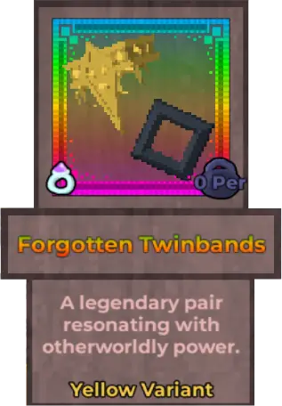
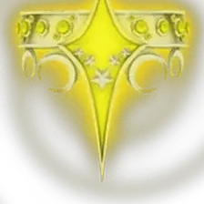
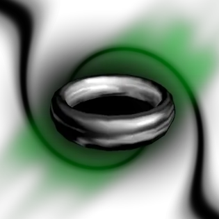

Forgotten Twinbands

Info
Slot: Accessory
Recolorable?: Yes
Unique Colors: None
Particle Effects: Yes
Sound Effects: None
Owner: frostyvcat
Appearance & Effects
In-game description: A legendary pair resonating with otherworldly power.
Forgotten Twinbands are a pair of asymmetrical armbands that are worn near the ends of the player's arms. The right armband is an ornate, golden metallic brace embedded with glowing gems. It also has a prominent, pointed ornament on the outside. The left armband is a a plain, black circle that emits black particle effects. The right armband can be recolored, with it's default color being yellow. Both the gems and the metal will change colors when the relic is recolored. The left armband cannot be recolored.
Inspiration
The Forgotten Twinbands were inspired by the NEED SOURCES - HELP ME TID OR CELESTAR from Arcane Adventures. The Forgotten Twinbands were originally Frosty's Snowflake, before the owner, frostyvcat, asked for it to be replaced with the twinbands due to the original not matching otufits well. Frosty's Snowflake is now unobtainable, and all copies of it have been replaced with the Forgotten Twinbands.

CAPTION_1
CAPTION_2
Image Gallery

The original NEED SOURCES

The original NEED SOURCES
CAPTION
CAPTION
CAPTION
CAPTION